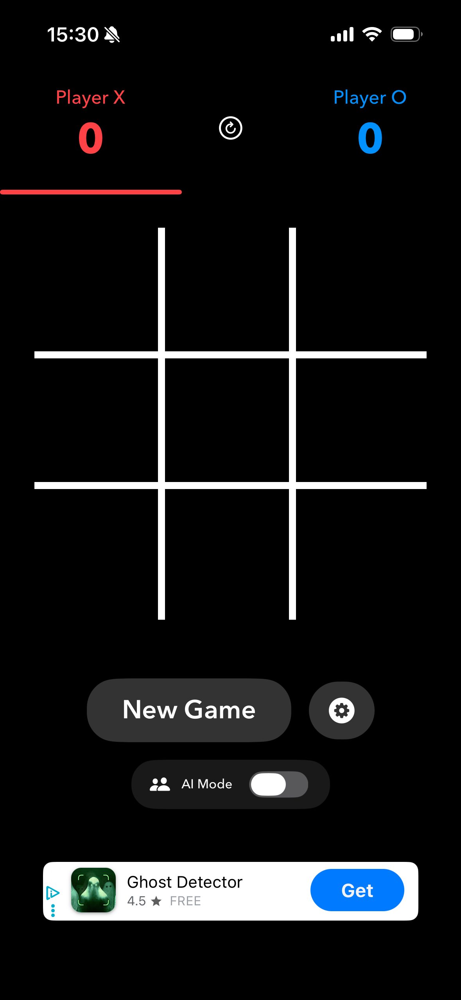
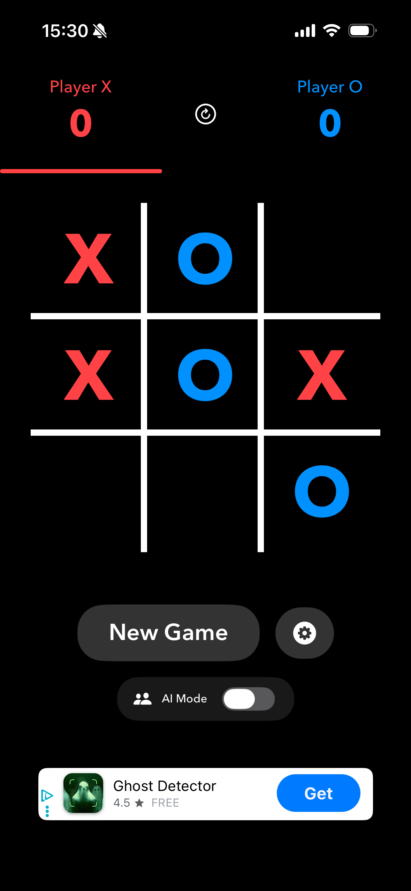
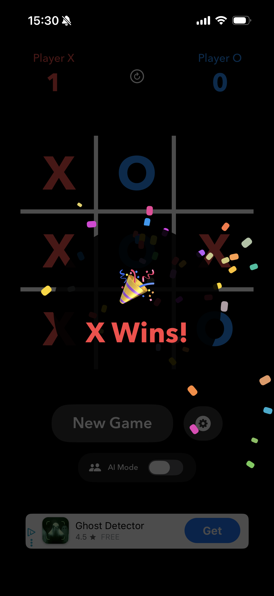

Tic Tac More!
Kill time, save sanity. A beautifully simple twist on a classic, designed for the 5-minute gap in your day.
Download on the App Store


The Classic, Solved.
We all know the problem with regular Tic-Tac-Toe: once you know how to play, every game ends in a draw. It's boring. So, we fixed it.
Tic-Tac-More introduces an "infinite" twist. You can only have three pieces on the board at any one time. Place your fourth piece, and your first one disappears. It turns a static grid into a constantly shifting strategy puzzle.
Zero Friction Fun
Mobile games today are exhausting. They demand you claim daily rewards, buy premium currency, and wait out artificial timers. Tic-Tac-More respects your time. It loads instantly, plays beautifully, and lets you get on with your day.
New: Bigger Boards, Longer Games
Version 1.1 introduces multiple board sizes. Play classic 3x3, tactical 4x4, or strategic 5x5 grids. Get 4 or 5 in a row for victory on the larger boards. More space means deeper strategy and longer, more engaging matches.
- Multiple Board Sizes: Choose from 3x3, 4x4, or 5x5 grids for varying difficulty levels.
- Infinite Mechanics: The disappearing pieces keep the board alive. Every move requires you to think two steps ahead.
- Two-Player Mode: Pass-and-play with friends and family on a single device.
- AI Opponent: Practice solo against computer opponent with different strategies.
- Stunning Minimalism: Clean, crisp aesthetics that look great in both Light and Dark mode.
- No Accounts Needed: Open the app and you are instantly playing. Zero setup required. Learn more in our privacy policy.
Frequently Asked Questions
How is Tic Tac More different from regular tic-tac-toe?
Tic Tac More solves the classic tic-tac-toe stalemate problem with infinite mechanics. You can only have three pieces on the board - when you place your fourth piece, your first one disappears. This creates a constantly shifting strategy game where every move matters. The game also offers multiple board sizes (3x3, 4x4, 5x5) for deeper tactical gameplay.
Is Tic Tac More free to download?
Yes, Tic Tac More is completely free to download and play. There are no in-app purchases, subscriptions, or premium features. Enjoy unlimited games without any cost.
Can I play Tic Tac More with a friend?
Yes! Tic Tac More features local multiplayer mode where two players can compete on a single device. Simply pass the phone back and forth for classic face-to-face gaming. You can also practice against the built-in AI opponent.
What board sizes are available in Tic Tac More?
Tic Tac More offers three board sizes: classic 3x3 grid (get 3 in a row), tactical 4x4 grid (get 4 in a row), and strategic 5x5 grid (get 5 in a row). Larger boards create longer, more complex matches with deeper strategy.
Does Tic Tac More work offline?
Yes, Tic Tac More works completely offline. No internet connection required. All gameplay happens locally on your iPhone, making it perfect for travel, flights, or anywhere without WiFi.
Do I need to create an account to play?
No account required. Tic Tac More respects your time and privacy. Simply open the app and start playing immediately. No registration, no login, no data collection.